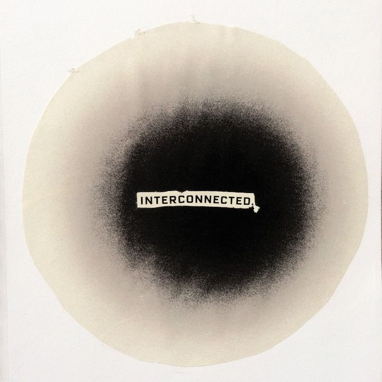
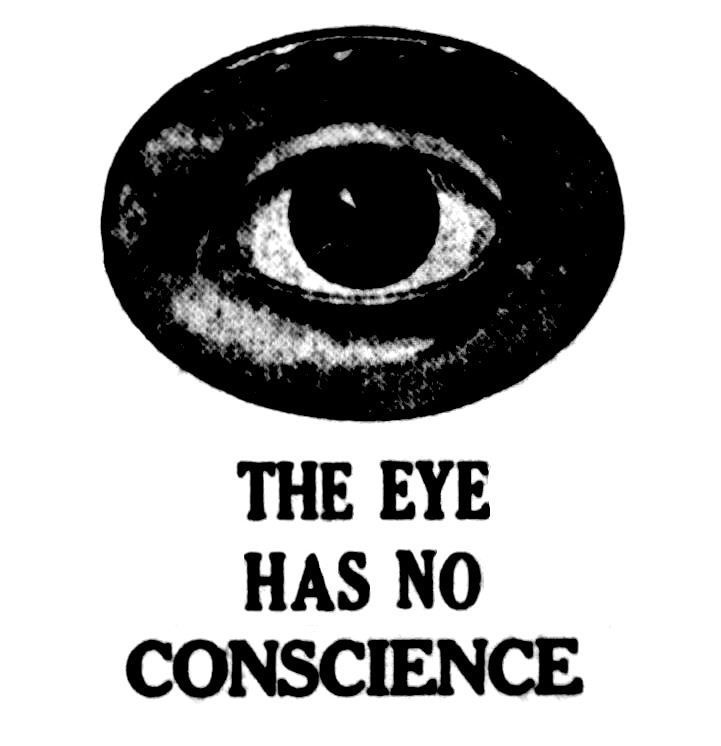
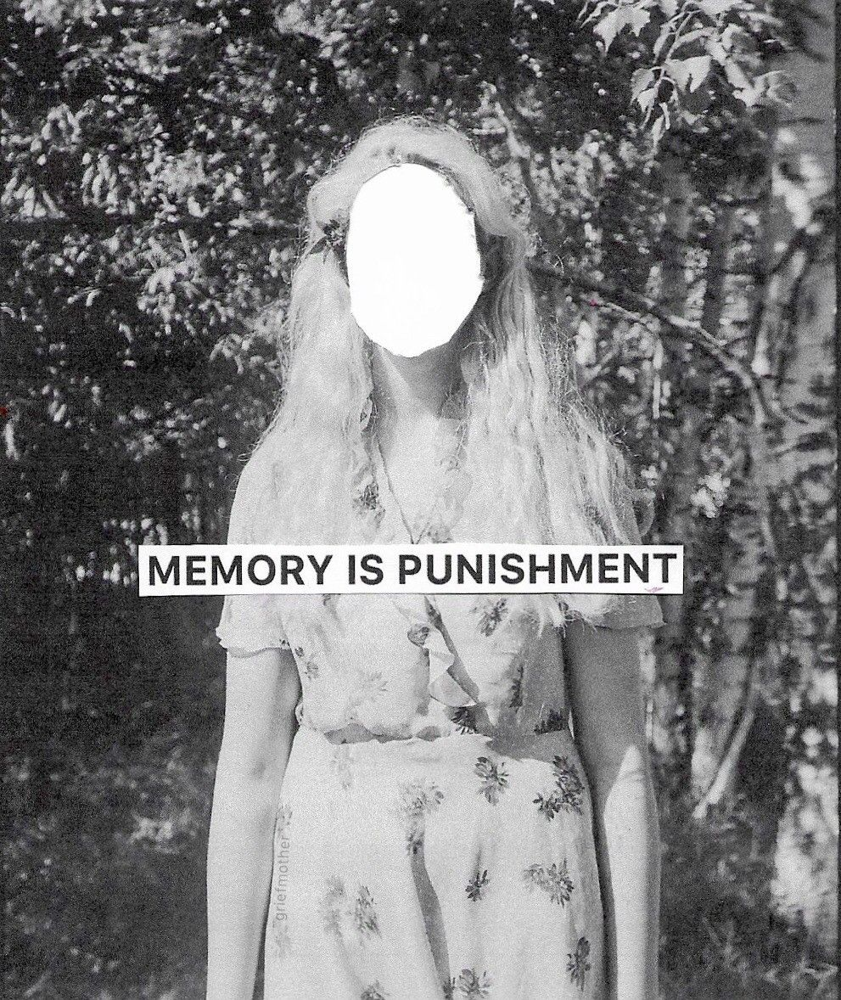

#11 (Cyberia)

In Cyberia I dwell, a world of digital delights,
Where the days stretch long and the nights turn into bright.
I find myself lost here, away from reality's realm,
...
My eyes are dry and the veins pop, in this endless helm.
My life is but a screen, a pixelated parade,
Where I've cut all contact, and my emotions fade.
I only eat one meal, a day that's all I need,
My soul is filled with emptiness, my heart is left to bleed.
The world outside seems distant, as if it's out of reach,
The people and the places, a mere dream I can't breach.
The click of a mouse, the hum of the wires,
Is all that I can hear, in this world of cyber desires.
...
The world here is a wonder, a place of endless possibility,
But it comes at a cost, a price I pay with my sanity.
I can't seem to break free, from the grip of this place,
It's like I'm trapped here, in this digital space.

The days turn into weeks, and the weeks turn into years,
I watch the world go by, with a blurry eyed tear.
The people I used to know, are now strangers to me,
And I am but a ghost, a mere shadow you can't see.
...
I long to break free, to see the world outside,
But it's like I'm in a cage, and there's nowhere to hide.
The world of Cyberia is my home, my reality,
And I fear I'll be trapped here, for all eternity.

So I wander through this world, lost and alone,
A digital nomad, without a home.
The veil of reality is thin, and I can see through,
But it's like I'm trapped in a dream, and I can't break through.
...
In Cyberia I dwell, and I fear I'll never leave,
My soul is trapped here, and I can't conceive,
Of a world outside, where I can be free,
From this world of screens, that's taken over me.